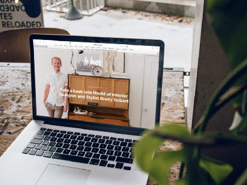

|  |
 Juan Cruz Martinez in
Better
Programming Juan Cruz Martinez in
Better
Programming |
| The Essential Guide to SEO for Web developers. |
| The key concepts of SEO and how to apply them to your site. |
| Read More . 8 min read |